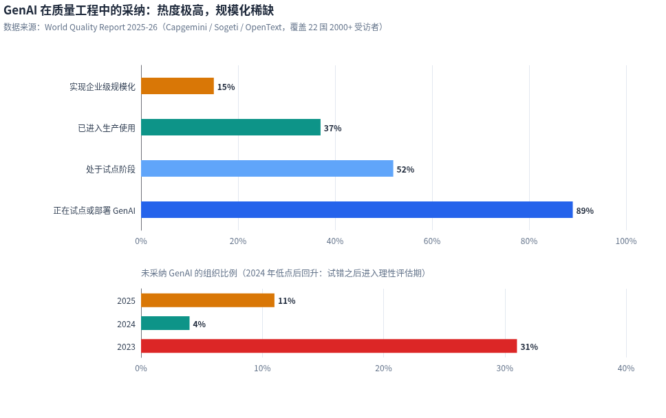
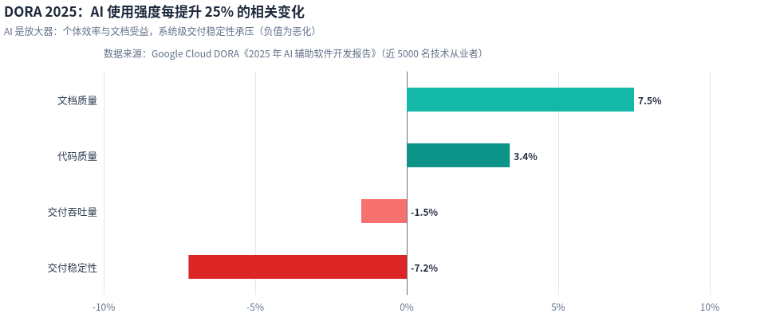
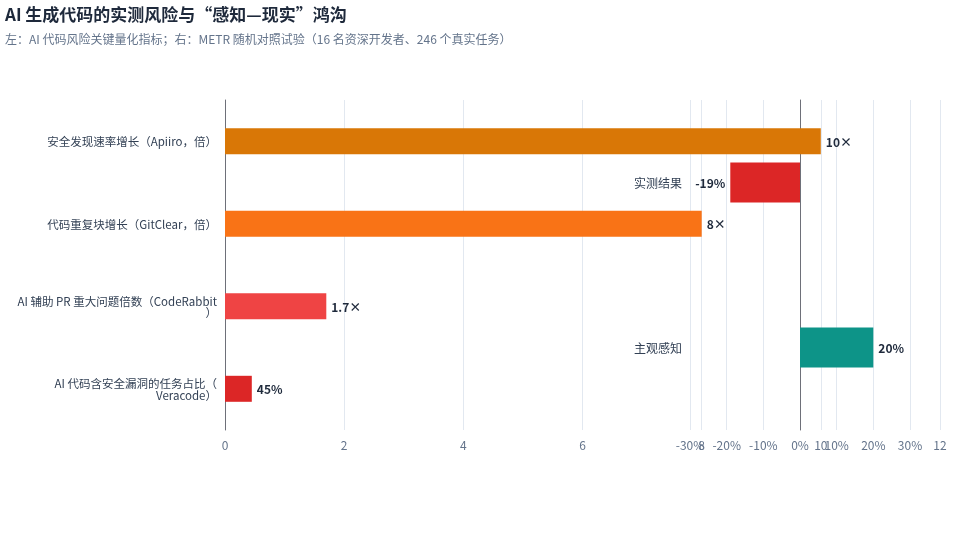

quality engineering · 202601 / 14
CORE JUDGMENT
测试价值坐标
正在上移
质量责任沿价值链上移：从执行测试，到编排验证，再到承担发布决策与治理。
01执行AI 吸收
02编排人审 AI
03判断与治理持续升值
signal 01 · adoption02 / 14
从试点热潮到规模化鸿沟
89% 在用，只有 15% 真正规模化
74 个百分点的落差，卡在 AI 能否安全、稳定地进入生产线

采用率高，进入规模化生产的比例仍然很低
WHY 15%试点穿不过四道生产门
- 67%
数据隐私生产数据无法安全供给模型
- 64%
集成复杂度AI 产出游离在 CI/CD 之外
- 60%
幻觉与可靠性结果缺少验证，不能直接放行
- 50%
AI/ML 技能缺口缺少评测、门禁与治理能力
规模化答案把 AI 接成生产线能力可集成可验证可审计
来源：World Quality Report 2025；数据为行业调研口径
signal 02 · maturity03 / 14
采纳率回答“有没有用”，成熟度回答“能否决策”
从生成测试，到风险决策
AI 最先进入
标准化、易验证的任务
数据反差生成能力快速普及，风险识别仍是少数团队的能力。
01
工具使用生成测试
用例、脚本、数据由 AI 批量产出
- 人的职责
- 审核可执行性
- 过关标准
- 产物可运行
02
流程接入编排验证
风险选测、CI 门禁、自愈进入流水线
- 人的职责
- 定义规则与异常兜底
- 过关标准
- 结果可追溯
03
系统治理风险决策
解释残余风险，给出放行与治理建议
- 人的职责
- 权衡业务损失并问责
- 过关标准
- 决策可审计
成熟度刻度产物数量→验证闭环→可承担的风险决策
signal 03 · quality paradox04 / 14
AI 写得越快，验证越贵
局部体验变好，系统稳定性可能变差
主证据DORA · 系统影响

AI 使用强度 +25%交付稳定性相关下降 7.2%：编码提速并未自动转化为系统级改善。
次证据代码风险 · 成本来源

安全问题、重复代码与感知偏差，解释了验证成本为何随产出一起上升。
45%含 OWASP Top 10 漏洞1.7×重大问题8×重复代码块−19%实测效率 / 主观 +20%
系统结论变更生产速度 ↑×验证容量不变=未经充分验证的变更 ↑
signal 04 · talent market05 / 14
低端收缩，高端膨胀
岗位总量故事，正在变成能力分化故事
中国市场数据为社区与招聘平台方向性信号
−47%手工 / 功能测试需求
+340%全栈测试开发需求
+455%AI 测试岗位需求
能力跟随需求迁移数字之后，要改变的是人和组织
个人补什么自动化工程AI 系统评测业务风险判断
组织怎么转真实场景练兵公共质量平台能力分层晋升
role redesign · three layers06 / 14
从岗位讨论落到任务拆分
按“执行—审核—问责”重新分配工作
同一岗位内的任务会流向不同责任主体，不能按岗位名称一刀切。
AI 直接执行人设规则并抽检
- 稳定回归重跑
- 测试数据与环境准备
- 定位符修复、日志聚类
交付：执行结果 + 异常证据
人机协作人定目标、AI 产出、人审例外
- 需求转测试矩阵
- 风险选测与失败分诊
- 探索路径建议、缺陷归因
交付：经审核的测试策略
人承担决策AI 提供证据，不替代签字
- 业务风险建模
- 发布条件与残余风险接受
- AI 评测、红队与质量治理
交付：可问责的放行结论
任务分配三问01高度重复？02结果易验证？03失败易回滚？“是”越多，越适合交给 AI；涉及业务损失与签字，必须由人负责
human moat · judgment07 / 14
最值得保留给人的四类工作
AI 能生成答案，但不能替组织承担判断
高判断密度工作AI 可辅助人必须判断证据 / 交付物
01
探索式测试
发现未知风险
生成已知路径、状态组合与探索提示
沿异常追问，识别模型未预设的风险
探索轨迹
未知风险清单
02
用户体验判断
理解真实感受
聚合行为数据、会话记录与可用性线索
判断犹豫、疲劳、误解及操作信心
用户观察证据
体验风险分级
03
业务预言与放行
承担损失权衡
估算技术影响、变更范围与失败概率
权衡客户承诺、窗口期与损失边界
风险接受条件
发布建议与签字
04
评判 AI 的评判
校准评测可信度
批量打分、聚类失败并发现分布漂移
识别自偏好、位置偏差与轨迹盲视
黄金集与抽检
人机一致率
资源配置原则AI 扩大覆盖→人承担判断→证据支持问责
new roles · opportunity08 / 14
职责升格后的组织落点
四类角色承接新的质量责任
角色核心责任关键产出成效指标
测试架构师资深测试负责人转型风险模型、测试策略、发布门禁覆盖矩阵、门禁规则、质量数据模型逃逸率 · 门禁命中率
质量效能工程师自动化/测试开发转型环境、数据、框架与自助平台平台服务目录、SDK、流水线模板复用率 · 维护工时
AI 系统测试员业务测试骨干转型幻觉、偏见、鲁棒性与轨迹评测评测集、红队案例、风险报告召回率 · 假阴性率
质量治理负责人质量经理/合规协作政策、数据、模型版本与问责使用规范、审计记录、事件预案政策覆盖率 · 审计通过率
RESPONSIBILITY FLOW同一条质量证据链
01测试架构师定规则
→
02质量效能供平台
→
03AI 系统测试员做评测
→
04治理负责人审计问责
人员策略 内部转化承接业务上下文，外部招聘补 Agent 工程等稀缺能力
operating model · hybrid09 / 14
嵌入式质量工程师 + 中央质量平台
把判断放进业务，把复用留在平台
治理与管理层用质量信号配置资源
↑接收：逃逸缺陷 · 变更失败率 · 容量缺口↓决策：风险偏好 · 投资优先级 · 发布政策
服务下发→1 : N←信号回流
典型业务 Squad
产品开发 × 8–10质量工程师 × 1
- 风险建模定义本业务损失边界
- 验收与审核审查 AI 产出和例外
- 发布判断解释残余风险并签字
产品线 B产品线 C产品线 D共享平台能力，各自保留业务判断
常规场景质量工程师 : 开发 ≈ 1 : 8–10受监管场景降低人机比，保留独立验证、双人复核与签字问责
process · shift left + right10 / 14
质量从发布前闸门变成连续系统
左移拦截确定性缺陷，右移捕获涌现性故障
01SHIFT LEFT
需求
可测试性评审
验收标准生成测试矩阵
门禁信号风险覆盖率未覆盖则退回澄清
02PRE-COMMIT
编码
单测 + 契约测试
AI 代码同级评审
门禁信号阻断级问题命中则停止构建
03DELIVERY
交付
风险选测 + 自愈
金丝雀渐进放量
门禁信号变更失败率异常则停止放量
04SHIFT RIGHT
生产
可观测性 + 合成监控
SLO 与错误预算
门禁信号MTTD / MTTR越线则触发复盘
信号驱动下一环节需求风险 → 测试优先级代码信号 → 构建去留金丝雀信号 → 放量节奏生产遥测 ↩ 回写风险模型
缺陷修复成本：需求 1×→编码 5–10×→测试 15–40×→生产 60–100×
行业经验区间，仅表达“越晚发现，修复代价越高”的量级关系；实际倍数应由本组织历史缺陷数据校准。
platform · toolchain11 / 14
按上下文组装，不追逐工具清单
四层工具栈，最终要沉淀成组织能力
01编码智能体验证Agent + Playwright
- 选
- 团队已普遍使用 AI 编码
- 管
- 测试随代码提交；敏感模块同级评审
- 留
- 可读测试资产 + 执行证据
- 选
- UI 变化快、自动化人力不足
- 管
- 区分定位符自愈与业务意图变更
- 留
- 业务流程模型 + 失败分类
03开源工程底座Playwright + LLM API
- 选
- 有工程团队，重控制、数据与成本
- 管
- 自行承担提示注入、评测与维护风险
- 留
- Agent Harness + 评测集
- 选
- 短期扩覆盖，不准备自建团队
- 管
- 合同连接业务风险与退出机制
- 留
- 覆盖基线 + 供应商可迁移数据
people · reskill12 / 14
共用能力底座，不同专业终点
五层能力按需组合，形成三条成长路径
五层能力模型能力库，不是单一晋升序列
L5 · Agent 工程Harness、重试兜底、熔断、多工具编排
L4 · AI 应用测试LLM、RAG、Agent、MCP、评测与红队
L3 · 自动化架构框架设计、CI/CD、质量门禁
L2 · 接口与协议HTTP、Mock、幂等性、鉴权
L1 · 工程基础编程、Linux、Git
L1–L2 是共同底座；L3–L5 根据目标岗位选修并在项目中验收。
01
业务风险与探索
- 适合起点
- 业务测试骨干、领域专家
- 12 个月可验证产出
- 主导风险地图与探索测试；为一次关键发布给出残余风险和放行建议
重点能力：业务建模 · 探索 · 沟通问责
02
自动化与质量平台
- 适合起点
- 测试开发、工程能力较强者
- 12 个月可验证产出
- 交付可复用的数据/环境服务与 CI 门禁，并被至少两个团队采用
重点能力：L2–L3 · 平台产品化 · 可观测性
03
AI 系统评测
- 适合起点
- AI 产品测试、数据敏感型人员
- 12 个月可验证产出
- 建立黄金集、轨迹评测和红队用例；上线离线—在线一致性看板
重点能力：L4–L5 · 评测设计 · 风险治理
选路原则按优势与业务缺口选择主路径+用真实交付物验收成长允许跨路径组合，不要求人人成为“质量编排者”
measurement · governance13 / 14
证明价值，同时约束风险
度量与治理，构成 AI 质量的双闭环
交付层部署频率 · 前置时间 · 变更失败率 · MTTR最终结果
质量层逃逸缺陷 · P0/P1 · flaky · AI 代码 30/90 天存活率隐性债务
杠杆层高价值工作占比 · 评审深度 · 维护工时时间投向
体感层开发者体验 · 工具信任度 · 焦虑信号人的感受
拒绝虚荣指标AI 代码占比用例数量Token 消耗端到端结果验收
异常→触发控制
02控制 AI 风险规则、审核、证据与处置持续循环
- 01
同等门禁AI 代码不降低质量标准
- 02
使用披露标记模型、版本与生成范围
- 03
敏感区复核资深人员审核高风险变更
- 04
证据留痕结论可追溯、责任可审计
度量异常 → 治理动作质量恶化降级自动权限交付恶化暂停扩面并复盘证据断链阻断发布
roadmap · start now14 / 14
先度量 · 再改造 · 后规模化
用 18 个月完成质量能力换挡
0–3 月
诊断与试点
- Owner
- 质量负责人 + 试点业务 TL
- 交付物
- 基线看板、技能地图、政策 v1、试点报告
- 门槛
- 维护工时 −30%，逃逸率不升
3–9 月
流程改造
- Owner
- 质量平台负责人 + 各 Squad QE
- 交付物
- CI 门禁、自愈选测、培训项目、月度看板
- 门槛
- 失败率、逃逸率、flaky 至少两项改善
9–18 月
规模化与升格
- Owner
- 工程负责人 + 质量治理负责人
- 交付物
- 平台服务目录、AI 评测体系、审计与预案
- 门槛
- 多产品线复用，发布证据链可审计
TRANSFORMATION RUNWAY用阶段证据购买下一段投入
NOW3M9M18M
验证假设1–2 条业务线证明有效复制机制第二团队独立复用治理规模全产品线可审计运行
职责演进人工执行→人审 AI→平台化验证→质量治理
暂停信号证据无法追溯·第二团队无法复用·平台成本快于收益
代码生产越便宜，验证、治理与质量决策越接近组织的信任基础设施。